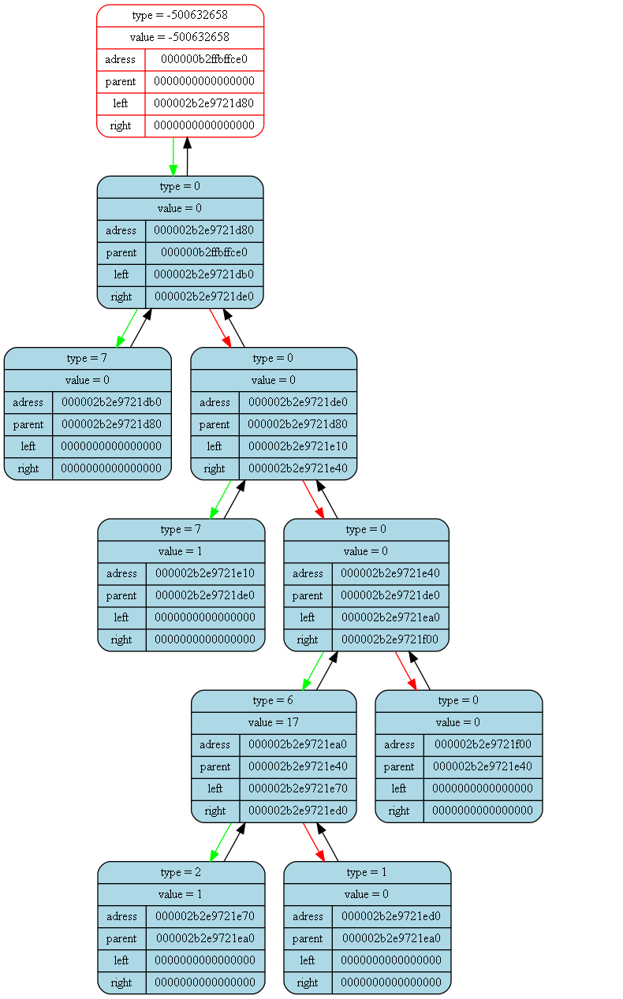

<pre>
<pre>

Tree dump from (int main()) at (frontmain.cpp) at line (17):
tree [000000b2ffbffcb0] "&(prog -> tree)" at (int ProgCtor(Prog_t*)) at (front.cpp)(31):
{
	status   = 1
	error    = 0
	size     = 9

	(((TYPE = 7; VAL = 0)TYPE = 0; VAL = 0((TYPE = 7; VAL = 1)TYPE = 0; VAL = 0(((TYPE = 2; VAL = 1)TYPE = 6; VAL = 17(TYPE = 1; VAL = 0))TYPE = 0; VAL = 0(TYPE = 0; VAL = 0))))TYPE = -500632658; VAL = -500632658)
}
